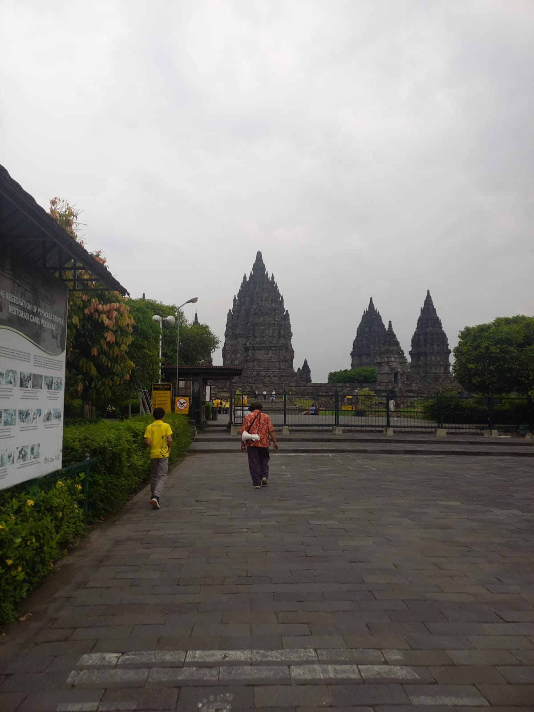
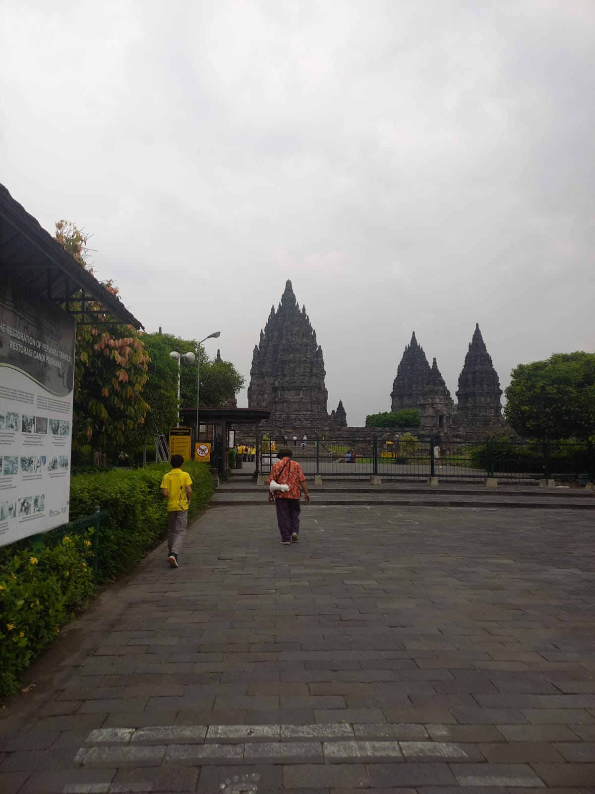

Kunjungan ke Candi Prambanan sangat menarik dan berkesan. Candi ini memiliki arsitektur yang megah serta nilai sejarah yang tinggi. Saya belajar tentang sejarah candi dan legenda Roro Jonggrang.
Suasana di sekitar candi juga nyaman, dengan taman yang luas dan udara segar. Kunjungan ini menambah wawasan dan semakin menumbuhkan rasa bangga bagi saya terhadap warisan budaya Indonesia.
| Pertanyaan | Jawaban |
| Apa yang membuat arsitektur Prambanan begitu istimewa dan unik? | Arsitektur Prambanan begitu istimewa dan unik karena merupakan replika dari gunung Himalaya dan menjulang tinggi. |
| Bagaimanakah perbandingan antara arsitektur Candi Prambanan dengan arsitektur Candi Borobudur? |
|
| Bagaimana warisan arsitekur Candi Prambanan memengaruhi bangunan-bangunan lain di Indonesia? | Warisan arsitektur Candi Prambanan memengaruhi bangunan-bangunan lain di Indonesia bisa menjadi sumber inspirasi. |
| Bagaimana peran budaya dan agama dalam pembangunan Candi Prambanan? | Peran budaya dan agama dalam pembangunan Candi Prambanan adalah dibuat oleh umat Hindu sebagai sarana ibadah. |
| Bagaimana kerajaan Yogyakarta memainkan peran dalam pembentukan nasionalisme Indonesia? | Kerajaan Yogyakarta memainkan peran dalam pembentukan nasionalisme Indonesia dengan bergabung diantara dengan pemerintah NKRI dan Keraton. |
| Bagaimana keraton tersebut mempertahankan tradisi dan nilai-nilai budaya Indonesia? | Keraton tersebut mempertahankan tradisi dan nilai-nilai budaya Indonesia dengan upacara yang tetap dilaksanakan sampai sekarang. |
 
